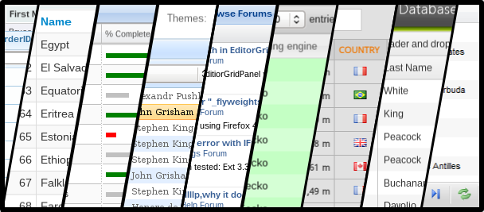
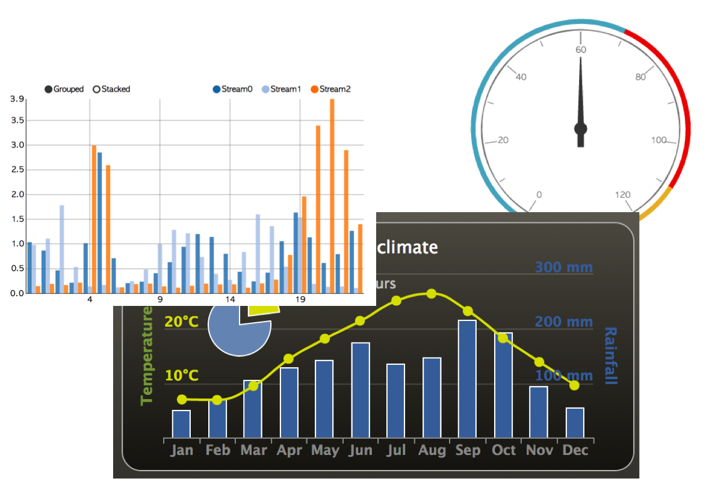
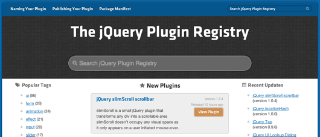
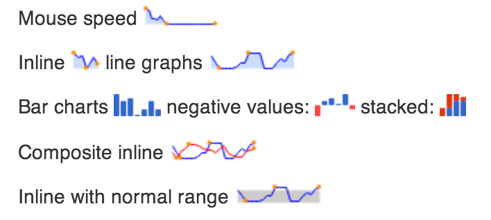

AngularJS로 UI 컴포넌트개발
Directive(지시자) 개발
고재도@GDG Korea WebTech
고재도
haibane84@gmail.com https://plus.google.com/+JeadoKo/
UI 컴포넌트?
그리드
차트
그 외에..
- Tabs
- Datepicker
- Carousel
- Modal (Dailogue)
- ComboBox
- ....
AngularJS는 아시죠?

AngularJS는 어떤 UI 컴포넌트를
제공할까요?

아무것도 없습니다.
jQuery는 플러그인이 있다!
Directive (지시자)
An overview of AngularJS
Google이 만든 웹 어플리케이션을 위한
Structural Framework
- 양방향 데이터 바인딩
- MVW
- Template
- Directive를 통한 UI 컴포넌트 재사용
- E2E 테스팅 및 Mocks
- 의존성 주입 (DI)
- ...
CRUD Apps 필수 기능 제공을 통한
어플리케이션 개발의 단순화
지시자란?
directives are markers on a DOM element (such as an attribute, element name, or CSS class) that tell AngularJS's HTML compiler ($compile) to attach a specified behavior to that DOM element or even transform the DOM element and its children. (from AngularJS Officail DOC)
초간단 hello 지시자
<body ng-app="demo">
<h1 hello></h1>
</body>
<script type="text/javascript">
angular.module('demo', []).
directive('hello', [function () {
return {
restrict: 'A',
link: function (scope, iElement, iAttrs) {
iElement.append("안녕하세요");
}
};
}]);
</script>
Built-in Directive
a, form, input, ngApp, ngBind, ngChange, ngClass, ngClick, ngController, ngCloak, ngDbclick, ngDisabled, ngHide, ngHref, ngInclude, ngModel, ngMousedown, ngRepeat, ngView, ...
그럼 지시자로 컴포넌트를
만들어 볼까요?
UI 컴포넌트 개발방법
- 팀플릿을 이용한 개발
- 외부 라이브러리를 이용한 개발
템플릿을 이용한 개발
페널을 만들어 봐요.
<body>
<panel title="안녕하세요" contents="안녕?"></panel>
<panel title="안녕하세요4" contents="안녕?"></panel>
</body>
<script type="text/javascript">
angular.module('demo', [])
.directive('panel', ['$log', function($log){
return {
scope: {
title :"@",
contents:"@"
},
restrict: 'AE',
templateUrl: 'panel.tmpl.html',
link: function($scope, iElm, iAttrs, controller) {
jQuery(iElm).find('.panel-heading')
.click(function() {
jQuery(iElm).find('.panel-body').toggle();
});
}
};
}]);
</script>
외부 라이브러리를 이용한 개발
jquery의 sparkline을 이용해봐요!

<body ng-controller="demoCtrl">
<sparkline data="array"></sparkline>
<button ng-click="change()">change Data</button>
</body>
<script type="text/javascript">
angular.module('demo', [])
.controller('demoCtrl',function ($scope) {
$scope.array = [10,8,5,7,4,4,1,10,8,5,7,4,4];
$scope.change = function () {
$scope.array = [1,2,3,2,4,2,10,1,2,9,2,1,10];
}
})
.directive('sparkline', ['$log', function($log){
return {
scope: {
data : "="
},
restrict: 'AE',
link: function($scope, iElm, iAttrs, controller) {
$scope.$watch(function (newData, beforeData) {
$(iElm).sparkline(newData.data);
});
}
};
}]);
</script>